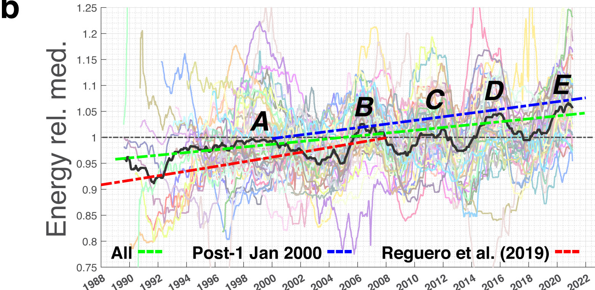
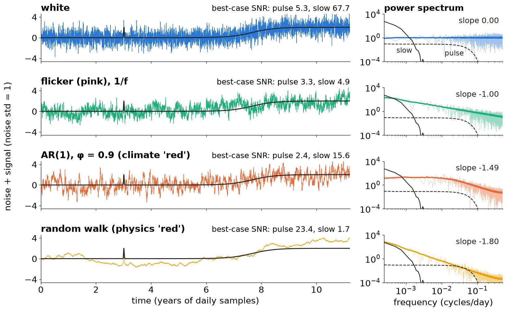
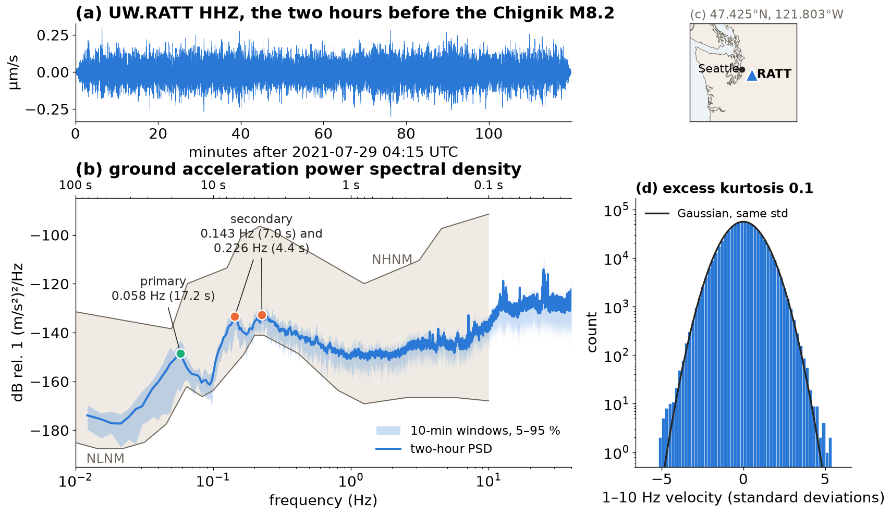
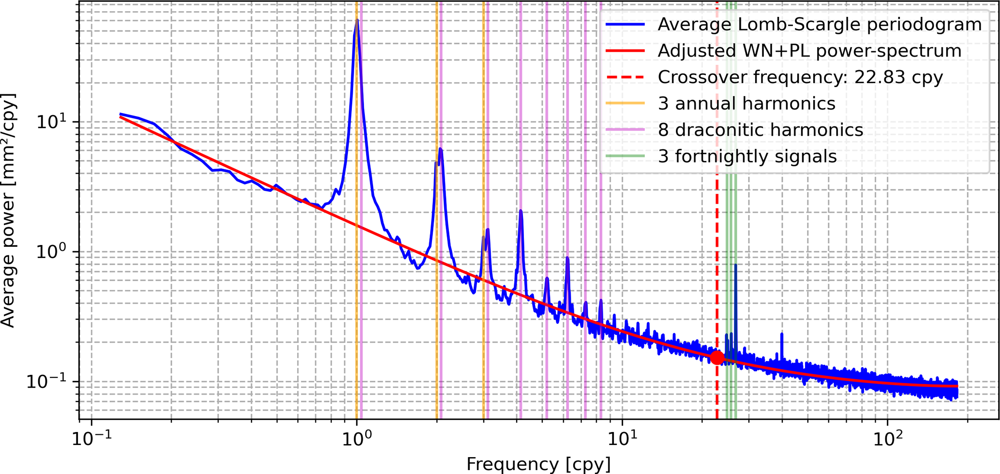
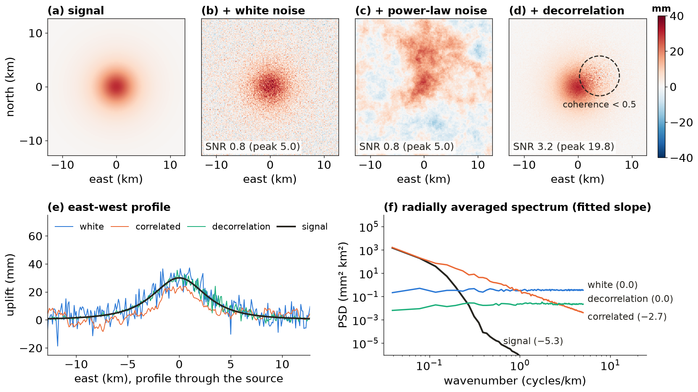
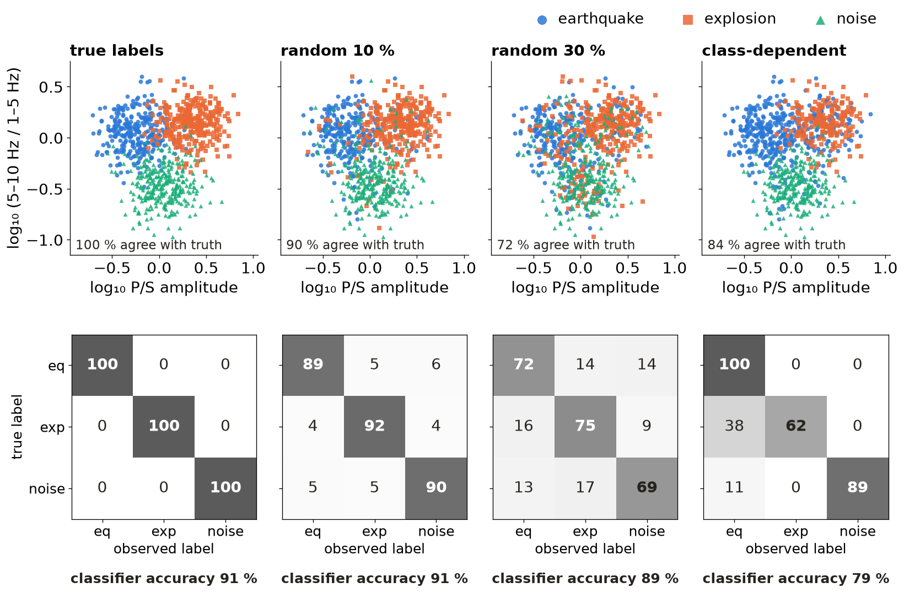
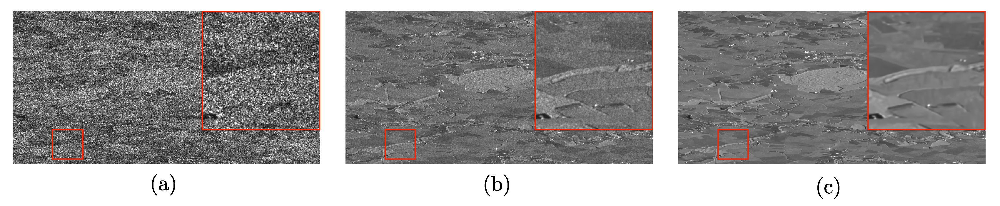
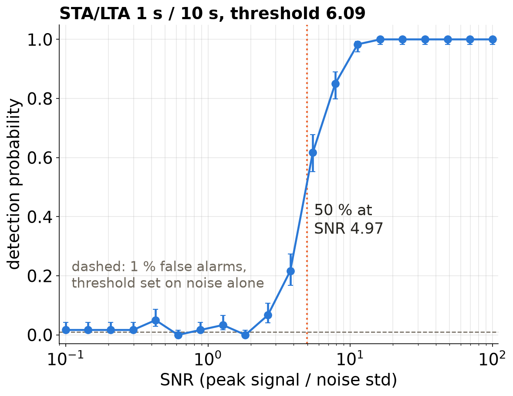
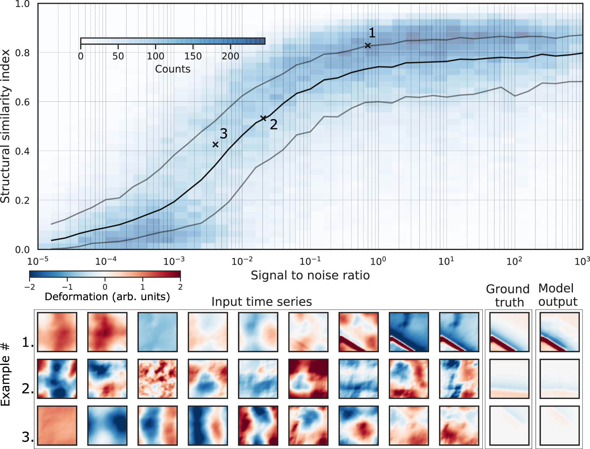

Local magnitude ML 3.4 at 41 km (05:03) and W-phase moment magnitude Mww 6.3, southern East Pacific Rise, 83° (17:51)
Data: UW.SP2 HHZ via EarthScope FDSN, doi:10.7914/SN/UW; USGS ComCat; NLNM and NHNM from Peterson (1993), USGS OFR 93-322; coastlines: Natural Earth. Figure: figscripts/lec09_day_spectrogram.py.
On one Thursday, daytime traffic raises the 1–10 Hz band by 9.8 dB while the ocean microseism stays within 1.5 dB of its night level, and two earthquakes cross both bands.
Station MILN, Milan, Dec 2019 to Mar 2020: daily spectra; band power, 2019/20 (red) against 2018/19 (blue); lockdown decrees marked.

Primary microseism energy (14–20 s) at 52 stations, each relative to its median; black: global median; green and blue: trends since the late 1980s and since 2000; A to E: El Niño and La Niña excursions.
In Milan the lockdown drop above 1 Hz matched an ordinary weekend; at 14–20 s, 52 stations record coastal wave energy rising 0.27% per year since the late 1980s.
Atmospheric delays of ±20 mm hide a 1 cm slip event; on the fiber, traffic fills the daytime, wind raises the first 500 channels and rain lights channels near drains.
The Montréal catalogs share 68 earthquakes and 93 blasts of 1,292 events, most of the rest missing from one catalog; Gorkha inventories differ pairwise by a mismatch index of 0.58 to 0.75 (1 is no overlap).
correct, or mask and record in the processing history
model it as a component, or give it a class
Kept in the data
corrected record and a flag
the separated source, as its own product
Right: the second Kepler transit of Kepler-150 f under two of six fitted models; k free parameters, χ² (chi-square misfit) and AIC (Akaike information criterion, lower is better) for both transits, χ² in the panel for this one.
Kipping et al. (2022), Nature Astronomy 6, 367–380, Extended Data Fig. 3, cropped to two rows of the second transit, doi:10.1038/s41550-021-01539-1. CC BY 4.0.
Two starspot crossings fit the second transit better than an exomoon (χ² 702.9 against 712.1, 14 parameters each); the star varies by 10.9 mmag, the transit is 1.5 mmag deep.
Two transients in four colors of noise
🖥️ Model & simulation🪨 Solid Earth📐 Geodesysynthetic, fixed seed

4,096 daily samples (11.2 years); each noise scaled to unit variance
Pulse (4-day width) and slow ramp (300 days), both 2 noise standard deviations high
Signal-to-noise ratio (SNR) here: matched filter with the exact noise covariance, the best case
At equal variance, the slow transient’s best-case SNR falls from 67.7 in white noise to 4.9 in flicker noise and 1.7 in a random walk, where the short pulse rises to 23.4.
Colored noise at RATT and in GPS positions
📍 In-situ sensor🪨 Solid Earth🌊 Ocean📈 Seismology

Panel (d), 1–10 Hz: excess kurtosis 0.1; in the 1–20 Hz band it is 3.7 (notebook 2.10, section 5.1).
📍 In-situ sensor🪨 Solid Earth📐 Geodesy

Mean periodogram of vertical GPS positions at tide gauges, with a white-noise plus power-law (WN+PL) fit; cpy: cycles per year; draconitic: the 351.4-day period of the GPS orbits relative to the Sun.
Left: UW.RATT HHZ, course copy, doi:10.7914/SN/UW; coastlines: Natural Earth; figscripts/lec09_ratt_noise_psd.py. Right: Gravelle et al. (2023), Earth System Science Data 15, 497–509, Fig. 5, doi:10.5194/essd-15-497-2023. CC BY 4.0.
At RATT the secondary microseism peaks at 7.0 s, 20 dB above the low-noise model; GPS vertical noise falls as a power law with median index −0.94 down to a white floor above 22.8 cycles per year.
One deformation bowl under three kinds of 2D noise
🖥️ Model & simulation🪨 Solid Earth🌋 Volcanologysynthetic, fixed seed

Mogi source 4 km deep, 30 mm peak uplift; 256 × 256 grid at 100 m
Correlated noise: spectrum k−8/3, the slope Hanssen (2001) reports for tropospheric delay between about 0.5 and 6 km (3D turbulence); about −5/3 at larger scales
Decorrelation: additive, standard deviation set by coherence γ: 0.8 mm at γ = 0.9, 7.7 mm at γ = 0.2 (dashed: γ < 0.5)
SNR in panels: std(signal)/std(noise), peak/std in brackets
Noise
std (mm)
corr. with truth
noise spectrum slope
white
6.00
0.62
0.03
correlated
6.00
0.50
−2.66
decorrelation
1.52
0.95
0.03
Figure: figscripts/lec09_noise_2d.py (seed 2026). Delay slope: Hanssen (2001), Radar Interferometry; decorrelation noise: Rodriguez & Martin (1992), IEE Proc. F 139, 147–159.
At the same 6 mm noise level, correlated noise lowers the correlation with the true bowl to 0.50, against 0.62 for white; decorrelation noise is 4.4 mm where coherence is below 0.5 and 0.8 mm on coherent ground.
Wrong labels, random and class-dependent
🖥️ Model & simulation🪨 Solid Earth📈 Seismologysynthetic, fixed seed

300 events per class; two synthetic features
Class-dependent: 40% of explosions and 15% of noise windows labeled earthquake
Logistic regression trained on each label set, scored on true labels
Labels
Agree
Accuracy
Explosion recall
true
100%
91.1%
91.2%
random 10%
90.2%
90.9%
91.2%
random 30%
71.9%
88.7%
92.5%
class-dep.
83.9%
79.3%
53.7%
Figure: figscripts/lec09_noise_categorical.py (seed 2026); noise types after Frénay & Verleysen (2014), IEEE Transactions on Neural Networks and Learning Systems 25, 845–869.
Random flips of 30% cost the classifier 2.4 points of accuracy; class-dependent flips of 16% overall cost 11.8 points and lower explosion recall from 91% to 54%.
ν: degrees of freedom; Pareto 1.5 has infinite variance, so its kurtosis is undefined
Earthquakes, 45.5–49°N, 121–124°W, 2000–2025, M ≥ 2.1: 5,680 events, b = 1.23
SeaTac wet days: 11,998; largest 127.5 mm, 20 Oct 2003
Data: USGS ComCat and NOAA GHCN-Daily USW00024233 (Seattle-Tacoma airport), course copies; Mc after Cao & Gao (2002), Woessner & Wiemer (2005). Figure: figscripts/lec09_distributions.py (seed 2026).
The 2001 M6.8 Nisqually earthquake carries 98.8% of the moment of all 5,680 events; an exponential fit gives SeaTac’s 127.5 mm day a probability of 6.5 × 10⁻¹⁰, against 1 in 11,998 observed.
Transforms change the noise
🛰️ Satellite & airborne🌱 Biosphere🦠 BiogeosciencesCopernicus Sentinel-1 (ESA), radar intensity over fields and villages

Transform
What happens to the noise
Example
Average over L looks or dates
variance divided by L if the looks or dates are independent and the scene unchanged
(b): 45 dates of the 1-look image (a)
Logarithm
multiplicative becomes additive; mean of logs biased by ψ(L) − log L
(c) was denoised in log space
First difference
random walk becomes white; white becomes blue
Global Navigation Satellite System (GNSS) daily positions
Band-pass filter
keeps the band’s noise; colors it; rings at gaps
RATT 1–10 Hz (lecture 8)
Normalize (z-score)
signal and noise rescaled together; heavy tails inflate the std
per-station amplitudes
Spectrogram in dB
multiplicative changes become additive shifts; the log of a periodogram is biased low by 2.5 dB (Euler’s constant)
Averaging 45 Sentinel-1 dates divides speckle variance by 45 under Goodman’s model; taking the log makes speckle additive but leaves it non-Gaussian, with a biased mean.
Building synthetic data with known truth
Signal with known parameters, kept as the answer key
Realistic noise: white, AR(1), power law, or spectrum-matched to a real record
One nuisance from another real source: a teleseism, soil temperature, El Niño, starspots, blasts
One instrument problem from lecture 8: gap, step, clock
The distribution of the noise values: Gaussian or heavy-tailed
Seed, record, disclose which samples are synthetic
Right: synthetic earthquake displacement at high-rate (1 sample/s) Global Navigation Satellite System (GNSS) stations plus real noise; columns: input, target and predicted time-frequency masks, denoised trace.
🖥️ Model & simulation📍 In-situ sensor🪨 Solid Earth📐 Geodesy
Thomas et al. combined 822,256 synthetic three-component signals with 729,303 real noise records; at amplitude SNR 0.4 the denoised vertical correlates with the truth at −0.67.
Detection floors measured on synthetics
🖥️ Model & simulation📍 In-situ sensor🪨 Solid Earth📈 Seismology

STA/LTA (short-term over long-term average, 1 s / 10 s) on spectrum-matched RATT noise
Noise only, 200 trials: median peak 4.34, 99th percentile 6.09 sets the threshold
Planted Ricker events, 60 trials per SNR: detection 0.07 at SNR 2.64, 1.00 at 16.24
🖥️ Model & simulation🪨 Solid Earth📐 Geodesy

Left: figscripts/lec09_stalta_floor.py (notebook 2.10 section 4.4, same seeds). Right: Rouet-Leduc et al. (2021), Nature Communications 12, 6480, Fig. 2, doi:10.1038/s41467-021-26254-3. CC BY 4.0.
STA/LTA crosses 50% detection at amplitude SNR 4.97; the InSAR autoencoder recovers fault offsets down to a power SNR of about 0.5%, an RMS ratio near 0.07, using nine frames of 48 × 48 pixels.
Build a synthetic version of your data (25 min)
pixi run -e core jupyter lab (install before class) → open 2.10_synthetic_noise.ipynb, Run All (about 10 s), then go to section 5. Pick the template closest to your project.
Template
Data
Nuisance from another source
Instrument problem
Measured against the truth
A. Volcano or local seismic
1D, 100 samples/s
Chignik P coda at RATT
2 s gap, zero-filled
detections, false triggers
B. Soil moisture
1D, daily
soil temperature on the probe
frozen days left blank
drydown time scale (12 days)
C. Gridded temperature
2D, monthly
El Niño-like pattern
regional step from 2006
trend map and its error bar
D. Transit light curve
1D, 2 min
starspots and granulation
Transiting Exoplanet Survey Satellite (TESS) downlink gap
transit depth (1%)
E. Catalog labels
categorical
daytime cultural triggers and blasts
UTC and PST clocks mixed
label agreement, accuracy
Produce: the printed numbers at two noise settings in your team notes, and the template’s figure for one of them.
Timing: 3 min read the template · 10 min change color, level or distribution · 7 min compare with the truth · 5 min reflection (5.7)
Share-out, 10 min: each team shows one figure and one sentence: what in your real data is signal for someone else?
Noise types across the course data
Noise
Data
Physical origin
Distribution
Spectrum
Synthesize with
Treat by
Instrument noise
all
electronics, digitizer, photon counts
Gaussian (Poisson for photons)
flat, rising as 1/f at long periods
independent draws
averaging, band choice
Ocean microseism
seismic
ocean waves at coasts and in storms
near Gaussian
peaks at 3–20 s
spectrum-matched, random phases
band choice; or use it for imaging
Cultural noise
seismic, DAS
traffic, industry
heavy-tailed, daily and weekly cycles
above 1 Hz
real noise windows
time-of-day mask, or its own class
Flicker, random walk
Global Navigation Satellite System (GNSS), climate proxies
monument, orbits, environment
Gaussian
1/f to 1/f²
power-law spectral synthesis
full covariance in uncertainties
Atmospheric delay
InSAR
water vapour, turbulence, layering
Gaussian, correlated
k−8/3 (0.5–6 km), k−5/3 larger, plus topography
power-law field
stacking, weather models
Speckle
radar intensity
interfering echoes
gamma, multiplicative
flat
signal × gamma(L)
multilooking, log transform
Stellar variability
light curves
spots, granulation
quasi-periodic
red plus rotation peak
sinusoids plus AR(1)
joint model, model comparison
Label noise
catalogs, maps
analyst choice, look-alike classes
random or class-dependent
none
flips at known rates
confusion matrix, relabeling
Each row is a real contribution with a source, a spectrum and a distribution; writing all three down is what makes a synthetic version of it realistic.
Friday, a rubric for AI-ready data
Friday’s session: AI readiness, building a rubric for AI-ready data, with agents (2.13)
Bring your team’s synthetic figure and its sentence: what is signal for someone else
Rubric questions from today: which contributions are signal and which noise, and who decided; the color and distribution of the noise; label error rates; instrument problems flagged
Reading arc stage 1 due today · The critical-evaluation lab (6.2) moves to a later date